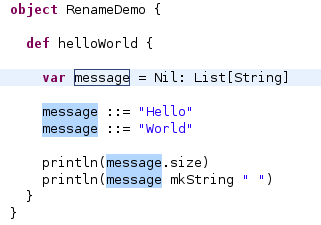
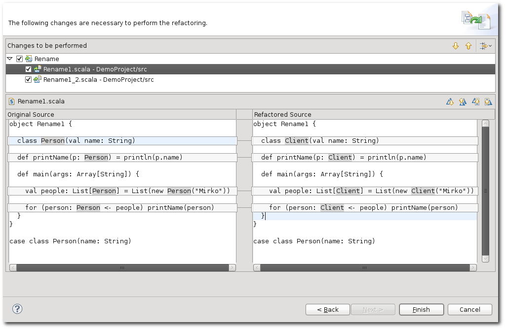

The Rename refactoring can be used to rename all names defined in a Scala program. This includes for example: methods, classes, objects, local variables, method parameters, type parameters. To perform the refactoring, the name has to be selected -- placing the cursor on the name also suffices -- and then the refactoring can be invoked.
If the name that is renamed is only accessible in the source file -- for example, a local variable, or a method inside another method -- then the refactoring is invoked in the inline mode, which links all occurrences in the source file and changes them as you type:

If the name is accessible from other source files, the renaming is done in the wizard and the changes can be previewed:

When the new name is entered in the wizard, it is checked if the name is valid and not already in use.
When renaming a top-level type in a file where the source file has the same name as the type, the file is currently not renamed.
Scala 2.8 introduced named parameters, but because of how they are represented internally, they are not being renamed at the moment, leading to compile errors.